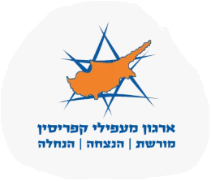
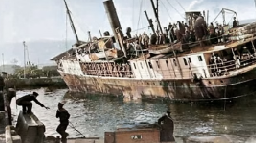

Dear Families of Clandestine Immigrants (Ma'apilim) of All Generations,
Along the shores of the Land of Israel, one of the most dramatic and heroic chapters in the founding of the state was written. Over 110,000 immigrants – our parents, grandparents, and the brave pioneers before us – set sail aboard 142 clandestine immigration ships by sea and air. They braved stormy seas, defied the British blockade, endured detention camps in Cyprus and Europe, and never surrendered until reaching safe harbor to build our homeland.
🎉 Great News – A Major Milestone in Our Journey!
In recent days, we received official approval from the Mateh Asher Regional Council and the Nahariya Municipality to establish commemorative memorial stations within their jurisdiction – a significant milestone toward realizing our vision!
Today, the Organization of Cyprus Exiles (Ma'apilim) is leading a national effort to erect 30 interactive memorial stations and plaques along Israel's coastline. Our objective is clear: To ensure that every single immigrant ship is respectfully and permanently commemorated at the coastal site tied to its historic story, for generations to come.
🌍 Donating from Abroad? Credit Card Payment Instructions:
- Credit Cards Only: Major international credit cards are accepted.
- Mobile Phone Field: Please enter 054-4285338 in the Mobile Phone field.
- Your International Number: Add your international phone number in the Notes box.
- Confirmation: Tax-deductible receipts are issued immediately via Email & SMS.
Please notify us once completed so we can confirm receipt of your contribution!
Aliyah Bet & Clandestine Immigration by the Numbers
| Immigrant Ships | 142 clandestine ships that departed Europe and North Africa |
|---|---|
| The Ma'apilim | Over 110,000 immigrants who defied White Paper restrictions to reach the homeland |
| Cyprus Internment Camps | ~52,000 refugees deported to detention camps in Cyprus, serving as a decisive catalyst in the diplomatic fight for statehood |
| Coastal Commemoration Project | 30 interactive memorial stations with QR codes placed at historical landing and heritage points along Israel's coastline |